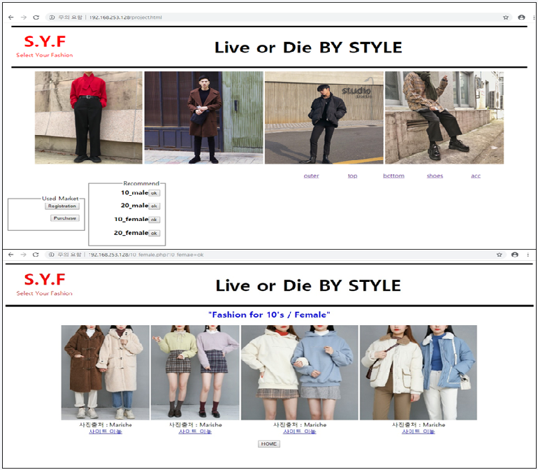
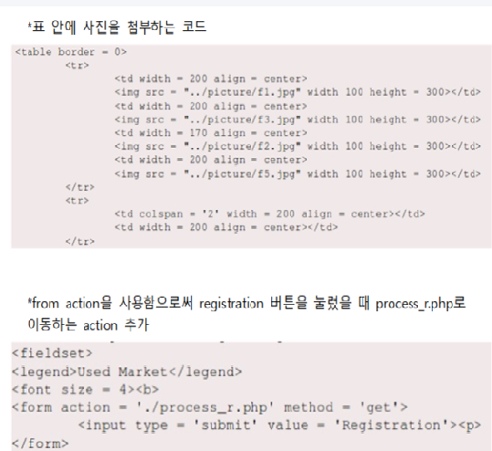
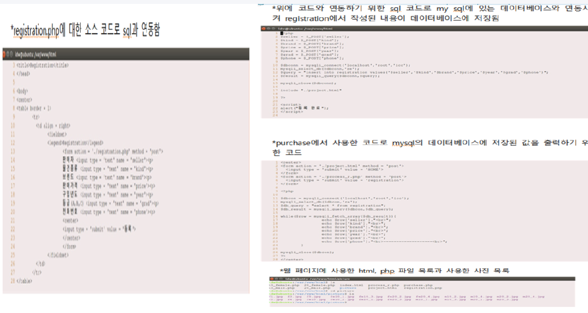

[ BU MARKET 중고 장터 웹 페이지 ]

이 프로젝트는 아파치 프로그램을 이용하여 웹 홈 페이지를 만들고, PHP와 SQL을 연동하였습니다.
프로젝트 목적 : 대학교 학생들이 ‘BU Market’이라는 웹 페이지를 이용하여 자신이 팔고 싶은 물품을 등록하면 다른 학생들이 등록된 물품들을 확인할 수 있고, 성별과 연령대 별로 배너를 만들어서 필요한 물품을 찾기 쉽도록 하기 위한 목적입니다. 즉, 같은 학교 안에서의 중고 거래 웹 페이지입니다.
프로젝트를 통해 느낀점 :
한 학기동안 4명의 조원들과 팀 프로젝트를 진행하면서, 많은 시행착오를 겪었고 이를 항상 해결해 가는 과정에서 팀원들 간의 의사소통 능력이 많이 향상되었다는 것을 프로젝트가 마무리 되는 단계에서 많이 느꼈습니다. 그 시행착오 중에 주제도 여러 번 바뀌었고, 바뀌는 과정에서 아두이노 코딩 및 AI에 대하여 간단하게라도 맛볼 수 있는 좋은 기회가 있었던 거 같습니다.

